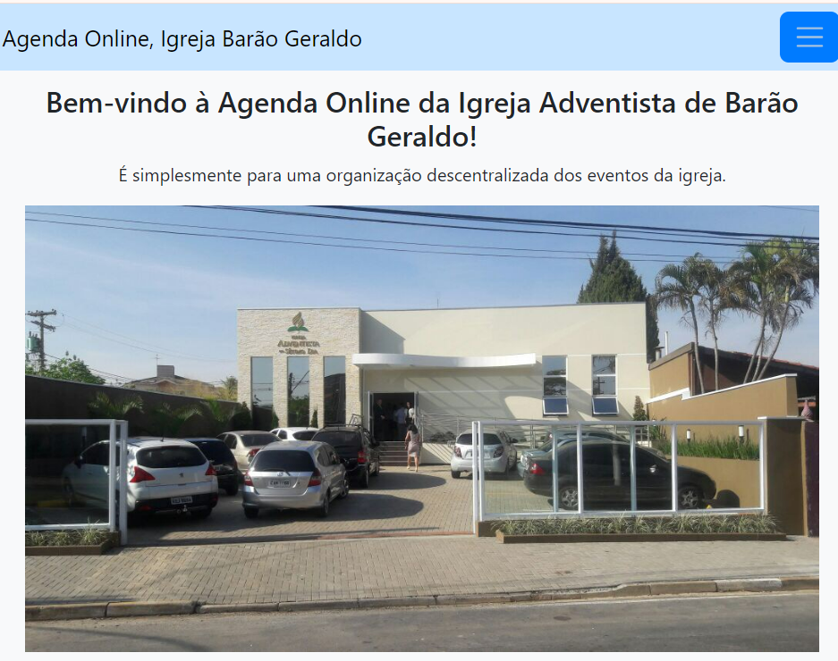
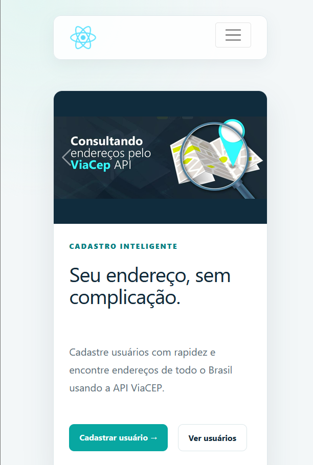

Portfólio
Projeto Agenda Online
Criação de uma página de agenda online onde cada líder realiza o cadastro da sua atividade para validação futura pela comissão de planejamento.
Esse sistema facilita a gestão das programações evitando conflito de datas nas programações.
Foi projetado para facilitar o trabalho de todos sem nenhum custo de hospedagem ou manutenção. Com um fluxo de acesso baixo, consigo usar ferramentas como Firestore para guardar os dados, GitHub para hospedar o código fonte e Vue.js para desenvolver a parte front-end.
Temos implementação de página de cadastro de líder, página de login e página de cadastro de evento. Não precisa de cadastro para visualizar os eventos já aprovados.
Acessar o projeto
API de Cadastro de Usuario
Desenvolvimento de uma API com Laravel para gerenciamento de usuários e consulta de endereços utilizando a API ViaCEP.
Durante o desenvolvimento deste projeto, adquiri conhecimentos práticos em Laravel, Blade e Vite, além de aprimorar minhas habilidades em Bootstrap 5 para criar interfaces responsivas e atraentes. Além disso, explorei a integração com a API ViaCEP, permitindo a consulta eficiente de endereços com base no CEP fornecido pelos usuários. A utilização do MySQL como banco de dados proporcionou uma experiência sólida na modelagem e gerenciamento de dados, enquanto o Docker facilitou a configuração do ambiente de desenvolvimento. Este projeto me proporcionou uma compreensão mais profunda do desenvolvimento web moderno, aprimorando minhas habilidades técnicas e fortalecendo minha capacidade de criar soluções funcionais e escaláveis.
- Funcionalidades implementadas:
- Cadastro de usuário com nome, e-mail e CEP.
- Validação dos campos obrigatórios, formato do e-mail e quantidade de dígitos do CEP.
- Preenchimento do endereço por meio da API ViaCEP.
- Listagem paginada de usuários, com cinco registros por página.
- Busca por nome, e-mail ou CEP.
- Visualização, edição e exclusão de usuários.
- Exclusão em cascata do endereço relacionado ao usuário.
